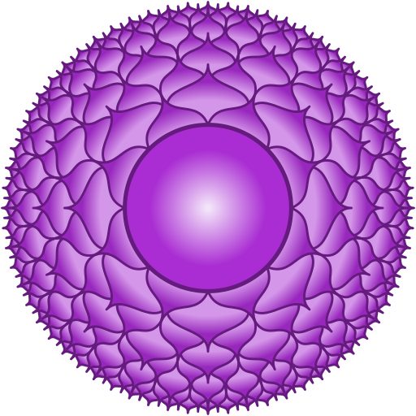

The seventh chakra
A series about the 8 chakras of Kundalini Yoga - Crown Chakra
 Crown Chakra
Crown Chakra
The journey through the eight chakras in Kundalini Yoga continues. Today the focus lies on the crown chakra as a very important central chakra. It is located at the vertex of the head and also above it and therefore slightly outside the body. In Sanskrit this chakra is called “Sahasrara”, which can be translated as “thousand times”.
Organically, the crown chakra is associated with the brain and especially the pineal gland. The chakra is represented with the color violet. As an element in a broader sense, the cosmos is associated here. Thematically, the seventh chakra covers the areas of consciousness, fulfillment, spirituality and divine guidance. Through this chakra, a connection is created between humanity and divinity, to the greater whole, the cosmic consciousness. Through this it is possible for us to gain access to the highest form of wisdom and knowledge - through the process of fusion and unity. It is about understanding beyond the possibilities and limitations of the mind. Important is also the activity and opening of the already known six other chakras. The crown chakra cannot be consciously controlled in this sense - in contrast to the other six “underlying” chakras. In addition, the kundalini energy, which has already risen through the other chakras, comes together here. After this ascent, the kundalini energy moves back down to the root chakra. Moreover, the hormonal balance and the balance in the entire body system are also regulated here.
Another important aspect of the crown chakra is humility and devotion, which is shown by bowing to infinity. Here you can also find an explanation for bowing: The vertex and thus seat of the seventh chakra is brought down to the earth when bowing. This creates a center of attention and direction of flow of the blood. New feelings of openness and strength can be conveyed through it.
In general, when strengthening the crown chakra, care must be taken to avoid the development of a spiritual ego. Here humility plays an important role in order not to gain the spiritual powers for the ego and for the sake of power. A connection to integrity and wholeness is accordingly important.
When your crown chakra is open …
… you experience the holistic transcendence of your identity as a separate person. This step of development is often called enlightenment. You feel a feeling of boundlessness, without limitations. The world can be understood beyond your own mind. The intensive connection with the spiritual world enables a deep feeling of inner peace, completely connected with divine love. Thus, fears on the inside become a strange, unrelated feeling. The opening of the crown chakra also means an opening towards the divine guidance in your own life. Everything that exists is perceived in unity and connectedness. Other people are met with compassion and tolerance. There is no urge (anymore) to change the fellow human beings. Life contexts are understood deeper and deeper on the spiritual level.
Can your Sahasrara also be blocked?
In this chakra there exists more of an underdevelopment than a mere blockage or disorder. This underdevelopment seems to be widespread. If a lot of anger accumulates in someone and this anger is projected in a diffuse way to a higher force, this can lead to a total aversion and rejection of a connection to the Divine. On a psychological level, being cut off can lead to disorientation, spiritual emptiness and finally uprooting. Then the feeling of leading a meaningless life and ignorance of the true self can be present.

Main characteristics of the crown chakra
- Sanskrit: Sahasrara
- Position: at and above the vertex of the head
- Color: Purple
- Element: Cosmos
- Psychological function: Self-knowledge
- Challenge: Attachment
- Universal identity
- “I understand.” / “I have the right to know.”
Kundalini Yoga & Sahasrara
The practice of specific exercises from Kundalini Yoga can help you to open your crown chakra.
- Ego Eradicator
- Mahaband
- Sat Kriya
- Concentration on the tip of the nose
- All meditations
As usual, this list of exercises is not a panacea. Please always look for yourself individually, what exactly you can do in which way! If you are uncertain, please always consult your doctor.
Within a Kundalini Yoga session usually different chakras are touched and activated, often with a focus. If you would like to know more about this or if you would like to book a Kundalini Yoga session with me on a specific chakra or topic, please feel free to send me an email. ✉️
In my next blog post I will dedicate myself to the eighth and thus last chakra of this series.
To keep up to date with my current posts, I invite you to follow me on my social media channels ( facebook, twitter, instagram). üôèüèΩ

Join next live class
Get Zoom linkElvira
Kundalini Yoga Trainer
I’m a Kundalini Yoga trainer and organize live classes online, onsite and for corporate businesses.